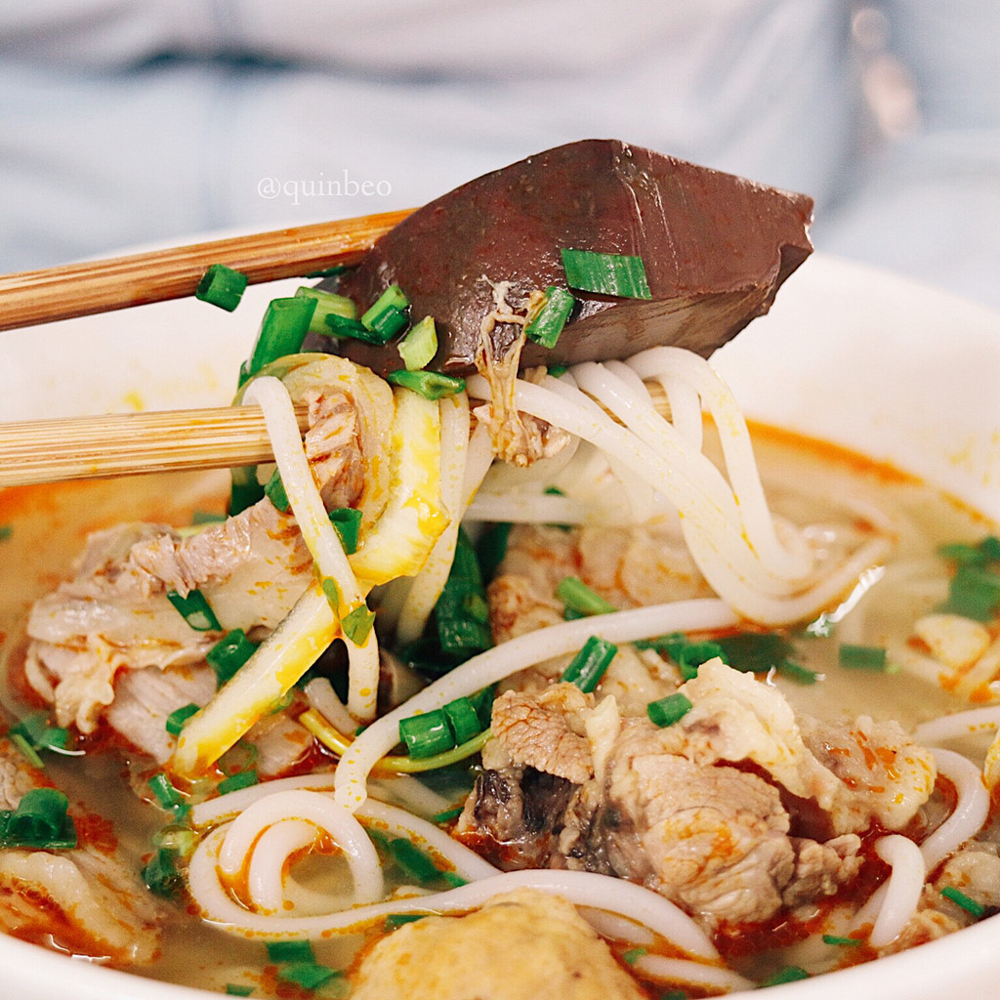

“ブン”はビーフン、“ボー”は牛を意味し、“フエ風の牛肉汁ビーフン”の意味で、日本で“フエの牛肉麺”或いは“フエの牛肉うどん”と呼ばれることも有る、ライスヌードルの一種。フエは旧南ベトナムと旧北ベトナムの間に位置するベトナム中部の都市で、このブンボーフエは中部ベトナムで代表的な麺となっているが、近年袋麺やカップ麺も売り出され、いまではベトナム全土で食べられるようになっている。 使用する麺は粳米の粉を捏ねて作るが、稲庭うどんほどの太さの生麺で、中国の“昆明米線”、“桂林米粉”、広東の“瀬粉”、台湾の“米苔目”などと似ている。 スープの味付けにはレモングラスと赤唐辛子を炒めて作った調味料サテ（vi:sa tế）とニョクマム（魚醤）を使う。 スープのだしは、レモングラス、フエ産の塩辛、豚足、牛肉などから取り、具としては、ベトナム風の蒲鉾などの練り物や牛の腿肉の外、薄荷葉、空芯菜、甘蕉の茎、糵、香草など、野菜をたっぷりのせてスープをかける。それら野菜を盛った皿と共に供される場合もある。 レモングラスと赤唐辛子の香辛料が効き、酸っぱくてピリッと辛いのが特徴だが、さらに赤唐辛子を加えて食べるのが一般的。北部名物の米の平打ち麺フォーとよく対比される。
